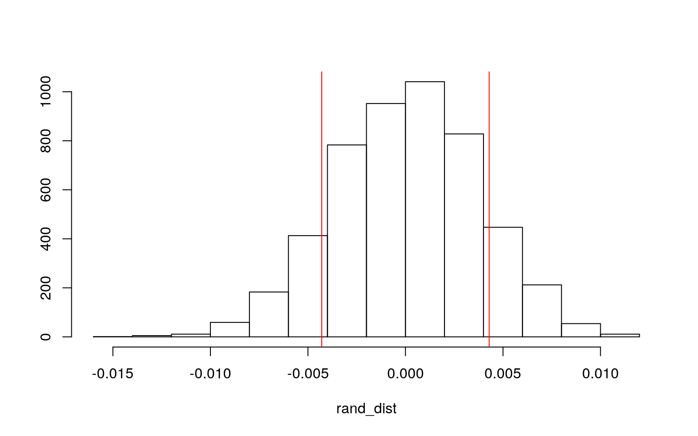
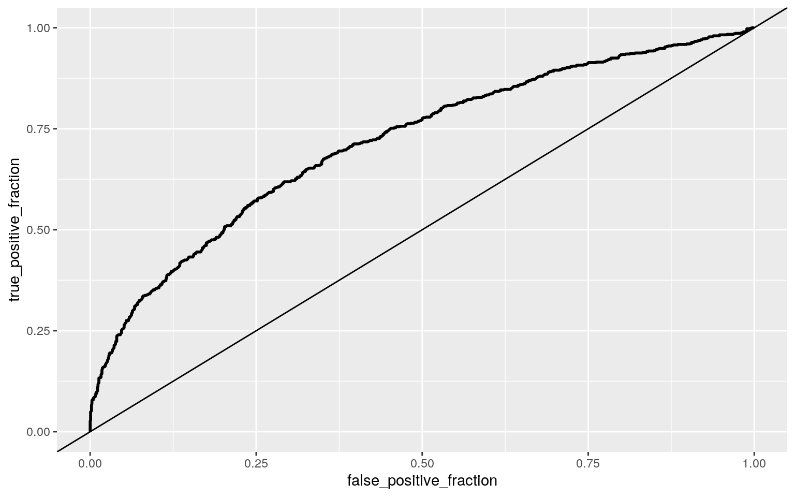

April 6, 2021
Introduction
data <- read.csv("dataset_for_project2.csv") %>% select(-c(1,14,13,11,10,9)) %>% select(-c(4,5)) %>% rename(mappability = X30) %>% mutate(rpf_count = log2(rpf_edited_count),prot_count = log2(prot_count)) %>% select(-c(rpf_edited_count))
data %>% glimpse()## Rows: 2,326
## Columns: 6
## $ GENE_NAME3 <fct> AAAS, AAK1, AAMP, AARS2, ABCB6,
ABCB8, ABCE1, ABCF1, ABCF3, ABHD10, ABHD11, A…
## $ prot_count <dbl> 12.494207, 8.570840, 11.728127,
11.456128, 9.670122, 12.397813, 16.229376, 15…
## $ ECRP <fct> no, no, yes, no, yes, no, no, no, no, no,
no, no, yes, yes, no, no, yes, no, …
## $ CDS_length <dbl> 1592, 2837, 1256, 2909, 2480, 2108,
1751, 2489, 2081, 872, 899, 1148, 584, 13…
## $ mappability <dbl> 0.9840220, 0.9723968, 0.9846235,
0.9593581, 0.9902685, 0.9938074, 0.9925392, …
## $ rpf_count <dbl> 8.189825, 7.169925, 9.257388,
6.906891, 7.515700, 8.483816, 9.897845, 9.32192…This dataset comes from my research at the Cenik Lab. We are designing a model that can predict gene expression based off of ribosomal profiling data. This dataset is a merged dataset of ribosomal profiling and proteomics counts. It contains the different genes with their log2 ribosomal profiling counts, log2 proteomics count, whether the gene is classified as an extra-cellular receptor proteins (ECRP) or not, the length of the coding strand of that gene, and the mappability of the gene’s transcript on on the human genome depending on if its 30 base pairs long. There are 2326 unique observations!
MANOVA testing
man1<-manova(cbind(rpf_count,prot_count,CDS_length,mappability)~ECRP, data=data)
summary(man1)## Df Pillai approx F num Df den Df Pr(>F)
## ECRP 1 0.13817 93.028 4 2321 < 2.2e-16 ***
## Residuals 2324
## ---
## Signif. codes: 0 '***' 0.001 '**' 0.01 '*' 0.05 '.' 0.1
' ' 1hist(data$CDS_length)plot(data$rpf_count,data$prot_count)Some of the MANOVA assumptions include, random samples and independent observations which definitely has been met. Multivariate normality is met for most of the variables, however, there is a skew for the CDS variable. There is linear relationships among the DVs!
Univariate ANOVAs
summary.aov(man1)## Response rpf_count :
## Df Sum Sq Mean Sq F value Pr(>F)
## ECRP 1 231.2 231.245 130.89 < 2.2e-16 ***
## Residuals 2324 4105.7 1.767
## ---
## Signif. codes: 0 '***' 0.001 '**' 0.01 '*' 0.05 '.' 0.1
' ' 1
##
## Response prot_count :
## Df Sum Sq Mean Sq F value Pr(>F)
## ECRP 1 2597.2 2597.17 359.22 < 2.2e-16 ***
## Residuals 2324 16802.6 7.23
## ---
## Signif. codes: 0 '***' 0.001 '**' 0.01 '*' 0.05 '.' 0.1
' ' 1
##
## Response CDS_length :
## Df Sum Sq Mean Sq F value Pr(>F)
## ECRP 1 48056959 48056959 26.954 2.264e-07 ***
## Residuals 2324 4143477504 1782908
## ---
## Signif. codes: 0 '***' 0.001 '**' 0.01 '*' 0.05 '.' 0.1
' ' 1
##
## Response mappability :
## Df Sum Sq Mean Sq F value Pr(>F)
## ECRP 1 0.0097 0.0096661 1.3284 0.2492
## Residuals 2324 16.9100 0.0072762Since there are only two groups, no need to do a post-hoc t test.
Bonferroni correction, Type I error & Discussion
0.05/5## [1] 0.011 - 0.95^5## [1] 0.2262191We were performed a total 5 tests, giving us a type I probability of 0.2262 and an adjusted significance level of 0.01.
For the ribosomal profiling counts, proteomics count and CDS_lengths, there is a significant difference between ECRP and non ECRP transcripts. However, for mappability, there doesn’t appear to be a significant difference between the two groups.
Randomization on the mean difference of the mappability between ECRP transcripts and non ECRP transcripts. Will do a mean difference!
data_2 <- data %>% select(mappability,ECRP)
data_2_diff <- mean(data_2[data_2$ECRP == "yes",]$mappability) - mean(data_2[data_2$ECRP == "no",]$mappability)
rand_dist<-vector()
for(i in 1:5000){
new<-data.frame(mappability=sample(data_2$mappability), ECRP = data_2$ECRP)
rand_dist[i]<-mean(new[new$ECRP=="yes",]$mappability)-
mean(new[new$ECRP=="no",]$mappability)
}
{hist(rand_dist,main="",ylab=""); abline(v = c(-data_2_diff, data_2_diff),col="red")}
mean(rand_dist>0.004291492 | rand_dist < -0.004291492)## [1] 0.2504H0: Mean mappability between Extra-Cellular Receptor Proteins and non Extra-Cellular Receptor Proteins is the same.
HA: Mean Mappability between Extra-Cellular Receptor Proteins and non Extra-Cellular Receptor Proteins is different.
After running a randomized difference of means through resampling, we fail to reject the null hypothesis. We can conclude that the mean mappability difference between Extra-Cellular Receptor Protein transcripts and non Extra-Cellular Receptor Protein transcripts is not significantly different.
Building a linear regression model
fit<-lm(prot_count ~ rpf_count*ECRP, data=data); summary(fit)##
## Call:
## lm(formula = prot_count ~ rpf_count * ECRP, data = data)
##
## Residuals:
## Min 1Q Median 3Q Max
## -8.8778 -1.6058 0.0311 1.6116 12.3985
##
## Coefficients:
## Estimate Std. Error t value Pr(>|t|)
## (Intercept) 7.99832 0.43266 18.486 < 2e-16 ***
## rpf_count 0.74708 0.04922 15.177 < 2e-16 ***
## ECRPyes -1.10260 0.70585 -1.562 0.118
## rpf_count:ECRPyes 0.30239 0.07673 3.941 8.36e-05 ***
## ---
## Signif. codes: 0 '***' 0.001 '**' 0.01 '*' 0.05 '.' 0.1
' ' 1
##
## Residual standard error: 2.42 on 2322 degrees of freedom
## Multiple R-squared: 0.2993, Adjusted R-squared: 0.2984
## F-statistic: 330.6 on 3 and 2322 DF, p-value: < 2.2e-16Interpretting the coefficient estimates
Predicted proteomics count for a gene transcript that is not an ECRP transcript, with 0 ribosomal profiling counts, is 9.412.
For every 1 unit increase in ribosomal profiling count, predicted proteomics count goes up by 0.747 for non ECRP genes.
For a transcript that is ECRP with zero ribosomal profiling counts, it has a predicted proteomics count that is -1.1026 lower than non ECRP transcripts.
Slope of rpf_count on proteomics count for ECRP transcripts is 0.30239 greater than for non ECRP transcripts.
Plotting the Regression
data %>% select(ECRP, rpf_count, prot_count) %>% na.omit %>% ggplot(aes(x = rpf_count, y = prot_count, color=ECRP))+
geom_point()+geom_smooth(method="lm")Using the adjusdted R squared value, 0.2984 is the proportion of the variation the model is able to explain.
Checking assumptions
Homoskedsaticity, Linearity and Normality
resids <- fit$residuals
fitvals <- fit$fitted.values
ggplot()+geom_point(aes(fitvals,resids))+geom_hline(yintercept=0, color='red')
ggplot()+geom_histogram(aes(resids),bins=10)library(lmtest)
library(sandwich)
bptest(fit)##
## studentized Breusch-Pagan test
##
## data: fit
## BP = 18.974, df = 3, p-value = 0.0002768ks.test(resids, "pnorm", mean=0, sd(resids))##
## One-sample Kolmogorov-Smirnov test
##
## data: resids
## D = 0.012895, p-value = 0.834
## alternative hypothesis: two-sidedData appears to be linear from the scatter plot. The data points on the far left appear to be outliers as there are over 2,000 data points here. We fail to reject the null hypothesis for the two tests for Homoskedsaticity and normality. That means that we can assume that the data is homoskedsatic and normal!
Model with Robust Standard Errors
coeftest(fit,vcov=vcovHC(fit))##
## t test of coefficients:
##
## Estimate Std. Error t value Pr(>|t|)
## (Intercept) 7.998322 0.482674 16.5708 < 2e-16 ***
## rpf_count 0.747076 0.055457 13.4712 < 2e-16 ***
## ECRPyes -1.102603 0.946426 -1.1650 0.24413
## rpf_count:ECRPyes 0.302391 0.101925 2.9668 0.00304 **
## ---
## Signif. codes: 0 '***' 0.001 '**' 0.01 '*' 0.05 '.' 0.1
' ' 1Even after running a model with robust standard errors, we have the same significant results as before. The rpf_count (the slope) and the interaction between rpf_count and ECRP were what yielded significant results. All of the significant results had their t values decrease slightly from the original SE, but this still wasn’t enough to make the results not significant.
Bootstrapped SEs vs Original SEs vs Robust SEs
meddat <- data %>% select(ECRP,prot_count,rpf_count)
# repeat 5000 times
samp_distn<-replicate(5000, {
boot_dat <- sample_frac(meddat, replace=T) #take bootstrap sample of rows
fit <- lm(prot_count~ECRP*rpf_count, data=boot_dat) #fit model on bootstrap sample
coef(fit) #save coefs
})
## Estimated SEs
samp_distn %>% t %>% as.data.frame %>% summarize_all(sd)## (Intercept) ECRPyes rpf_count ECRPyes:rpf_count
## 1 0.4857358 0.933311 0.05582398 0.1006075## Robust SEs
coeftest(fit, vcov=vcovHC(fit))[,1:2]## Estimate Std. Error
## (Intercept) 7.9983218 0.48267435
## rpf_count 0.7470761 0.05545742
## ECRPyes -1.1026035 0.94642627
## rpf_count:ECRPyes 0.3023909 0.10192526## Normal-theory SEs
coeftest(fit)[,1:2]## Estimate Std. Error
## (Intercept) 7.9983218 0.43265763
## rpf_count 0.7470761 0.04922418
## ECRPyes -1.1026035 0.70584688
## rpf_count:ECRPyes 0.3023909 0.07673063After running the same regression model with bootstrapped standard errors, based off of the SEs, I don’t think there is any significant change in the resulting p-values.For the intercept, the robust SE actually lies in between the values calculated using robust and original SEs. For the ECRP yes variable its bootstrapped SE is also in between the SE values calculated for robust and original SE. For the rpf_count Coefficient bootstrapped SE, it also was between the values for robust and SE original SE. For the interaction between ECRP yes and rpf_count, the bootstrapped SE was also between the values for robust and SE original SE. Generally speaking, the robust standard errors were always the more conservative estimates, while the original SEs were the smallest estimates. Since the bootstrapped standard errors were between that of the original and robust SEs, the p values would still be the same and not change the significance of anything.
Fitting a logistic regression model
Interpreting coefficients
data_5 <- data %>%
select(prot_count,rpf_count,ECRP) %>%
mutate(y = ifelse(ECRP == "yes",1,0))
fit<-glm(y~prot_count + rpf_count, data=data_5, family="binomial")
summary(fit)##
## Call:
## glm(formula = y ~ prot_count + rpf_count, family =
"binomial",
## data = data_5)
##
## Deviance Residuals:
## Min 1Q Median 3Q Max
## -1.7915 -0.8631 -0.6257 1.0473 2.3106
##
## Coefficients:
## Estimate Std. Error z value Pr(>|z|)
## (Intercept) -5.8636 0.3600 -16.289 < 2e-16 ***
## prot_count 0.2684 0.0199 13.489 < 2e-16 ***
## rpf_count 0.1153 0.0393 2.935 0.00333 **
## ---
## Signif. codes: 0 '***' 0.001 '**' 0.01 '*' 0.05 '.' 0.1
' ' 1
##
## (Dispersion parameter for binomial family taken to be 1)
##
## Null deviance: 2994.1 on 2325 degrees of freedom
## Residual deviance: 2660.3 on 2323 degrees of freedom
## AIC: 2666.3
##
## Number of Fisher Scoring iterations: 3exp(coef(fit))## (Intercept) prot_count rpf_count
## 0.002841007 1.307892818 1.122269651When both prot_count and rpf_count are 0, the odds of a transcript being ECRP is 0.00284.
Controlling for proteomics count , for every 1-unit increase in ribosomal profiling count, odds of being an ECRP transcripts changes by a factor of 1.122.
Controlling for ribosomal profiling count , for every 1-unit increase in proteomics count, odds of being an ECRP transcripts changes by a factor of 1.308.
Creating a Confusion Matrix
data_5$prob <-predict(fit,type="response") #save predicted probabilities
table(predict=as.numeric(data_5$prob >.5),truth=data_5$y)%>%addmargins## truth
## predict 0 1 Sum
## 0 1368 513 1881
## 1 158 287 445
## Sum 1526 800 2326The Accuracy, Sensitivity (TPR), Specificity (TNR), Precision (PPV), and AUC of the model
class_diag<-function(probs,truth){
tab<-table(factor(probs>.5,levels=c("FALSE","TRUE")),truth)
acc=sum(diag(tab))/sum(tab)
sens=tab[2,2]/colSums(tab)[2]
spec=tab[1,1]/colSums(tab)[1]
ppv=tab[2,2]/rowSums(tab)[2]
if(is.numeric(truth)==FALSE & is.logical(truth)==FALSE) truth<-as.numeric(truth)-1
#CALCULATE EXACT AUC
ord<-order(probs, decreasing=TRUE)
probs <- probs[ord]; truth <- truth[ord]
TPR=cumsum(truth)/max(1,sum(truth))
FPR=cumsum(!truth)/max(1,sum(!truth))
dup<-c(probs[-1]>=probs[-length(probs)], FALSE)
TPR<-c(0,TPR[!dup],1); FPR<-c(0,FPR[!dup],1)
n <- length(TPR)
auc<- sum( ((TPR[-1]+TPR[-n])/2) * (FPR[-1]-FPR[-n]) )
data.frame(acc,sens,spec,ppv,auc)
}
class_diag(data_5$prob,data_5$y)## acc sens spec ppv auc
## 1 0.7115219 0.35875 0.8964613 0.6449438 0.7156053From the model created, the Accuracy is 0.71152 , Sensitivity (TPR) is 0.35875, Specificity (TNR) is 0.8964613, Precision (PPV) is 0.6449438, and AUC is 0.7156053. The sensitivity is really low, so there is a lot of false negatives and the model isn’t able to detect the ECRP really well. This means that a lot of the ECRP transcripts are classified as non ECRP.
Density Plot of the log-odds
data_5$logit<-predict(fit,type="link") #get predicted logit scores (logodds)
data_5%>%ggplot()+geom_density(aes(logit,color=ECRP,fill=ECRP), alpha=.4)+
theme(legend.position=c(.85,.85))+geom_vline(xintercept=0)+xlab("predictor (logit)")ROC Plot
library(plotROC) #install.packages(plotROC)
#geom_roc needs actual outcome (0,1) and predicted probability (or predictor if just one)
ROCplot<-ggplot(data_5)+geom_roc(aes(d=y,m=prob), n.cuts=0) + geom_abline(slope = 1)
ROCplot
calc_auc(ROCplot)## PANEL group AUC
## 1 1 -1 0.7156053The AUC calculated for this model is 0.71, which would get a Fair grade! It isn’t the best model as the AUC isn’t that high.
Logistic Regression but with all the Variables
data_6 <- data %>% select(-GENE_NAME3) %>% mutate(ECRP = ifelse(ECRP == "yes",TRUE,FALSE))
fit<-glm(ECRP~.,data=data_6,family="binomial")
summary(fit)##
## Call:
## glm(formula = ECRP ~ ., family = "binomial", data =
data_6)
##
## Deviance Residuals:
## Min 1Q Median 3Q Max
## -1.8082 -0.8625 -0.6258 1.0506 2.3229
##
## Coefficients:
## Estimate Std. Error z value Pr(>|z|)
## (Intercept) -5.664e+00 6.388e-01 -8.866 < 2e-16 ***
## prot_count 2.605e-01 2.454e-02 10.617 < 2e-16 ***
## CDS_length -2.217e-05 4.676e-05 -0.474 0.63549
## mappability -2.008e-01 6.000e-01 -0.335 0.73787
## rpf_count 1.318e-01 4.937e-02 2.670 0.00759 **
## ---
## Signif. codes: 0 '***' 0.001 '**' 0.01 '*' 0.05 '.' 0.1
' ' 1
##
## (Dispersion parameter for binomial family taken to be 1)
##
## Null deviance: 2994.1 on 2325 degrees of freedom
## Residual deviance: 2660.0 on 2321 degrees of freedom
## AIC: 2670
##
## Number of Fisher Scoring iterations: 3prob <- predict(fit,type = "response")
class_diag(prob,data_6$ECRP)## acc sens spec ppv auc
## TRUE 0.7132416 0.36 0.8984273 0.6501129 0.7159928table(predict=as.numeric(prob >.5),truth=data_6$ECRP)%>%addmargins## truth
## predict FALSE TRUE Sum
## 0 1371 512 1883
## 1 155 288 443
## Sum 1526 800 2326Although we included all the variables, we still got a very similar AUC as before, 0.7159928 vs 0.7156053. This is due to the fact that added variables were simply not significant and therefore didn’t contribute as much to the model. As a result, the AUC is fair and the sensitivity value is still very low. There is not really any difference between this model and the other one.
10-fold CV
set.seed(1234)
k=10
data_oops <- data_6 %>% sample_frac #put rows of dataset in random order
folds <- ntile(1:nrow(data),n=10) #create fold labels
diags<-NULL
for(i in 1:k){
train <- data_oops[folds!=i,] #create training set (all but fold i)
test <- data_oops[folds==i,] #create test set (just fold i)
truth <- test$ECRP #save truth labels from fold i
fit <- glm(ECRP~.,data=train,family="binomial")
probs <- predict(fit, newdata=test, type="response")
diags<-rbind(diags,class_diag(probs,truth))
}
diags%>%summarize_all(mean)## acc sens spec ppv auc
## 1 0.71324 0.3611666 0.8976123 0.6491281 0.7121655After performing 10 fold cross validation, the AUC didn’t change much at all. We would still give it a fair rating. Accuracy was 0.71324, sensitivity was 0.3611666, specificity was 0.8976123, precision was 0.6491281, and AUC was 0.7121655. This AUC value can be classified as fair! Sensitivity is still very low.
Lasso
library(glmnet)
set.seed(1234)
y<-as.matrix(data_6$ECRP) #grab response
x<-model.matrix(ECRP~.,data=data_6)[,-1] #grab predictors
head(x)## prot_count CDS_length mappability rpf_count
## 1 12.494207 1592 0.9840220 8.189825
## 2 8.570840 2837 0.9723968 7.169925
## 3 11.728127 1256 0.9846235 9.257388
## 4 11.456128 2909 0.9593581 6.906891
## 5 9.670122 2480 0.9902685 7.515700
## 6 12.397813 2108 0.9938074 8.483816cv<-cv.glmnet(x,y,family="binomial")
lasso<-glmnet(x,y,family="binomial",lambda=cv$lambda.1se)
coef(lasso)## 5 x 1 sparse Matrix of class "dgCMatrix"
## s0
## (Intercept) -3.800742905
## prot_count 0.202328370
## CDS_length .
## mappability .
## rpf_count 0.002202293lasso_dat <- data_6 %>%
select(prot_count, rpf_count,ECRP)
fit<-glm(ECRP~.,data=lasso_dat,family="binomial")
prob <- predict(fit,type = "response")
class_diag(prob,lasso_dat$ECRP)## acc sens spec ppv auc
## TRUE 0.7115219 0.35875 0.8964613 0.6449438 0.7156053Out of the 4 predictor variables, only 2 of them were retained. rpf_count and and prot_count were the only two variables that were retained.
10-fold CV Using Lasso Selected Variables
set.seed(1234)
k=10
data_oops <- data_6 %>% select(ECRP,prot_count,rpf_count)%>% sample_frac #put rows of dataset in random order
folds <- ntile(1:nrow(data),n=10) #create fold labels
diags<-NULL
for(i in 1:k){
train <- data_oops[folds!=i,] #create training set (all but fold i)
test <- data_oops[folds==i,] #create test set (just fold i)
truth <- test$ECRP #save truth labels from fold i
fit <- glm(ECRP~.,data=train,family="binomial")
probs <- predict(fit, newdata=test, type="response")
diags<-rbind(diags,class_diag(probs,truth))
}
diags%>%summarize_all(mean)## acc sens spec ppv auc
## 1 0.7119524 0.3577137 0.8976362 0.6469831 0.7144793After performing a 10-fold cv using only the variables lasso selected, the model’s out-of-sample AUC is very similar to the logistic regressions above. Once again, the other variables were not significant in the first place so they never contributed to the model!
data(package = .packages(all.available = TRUE))…